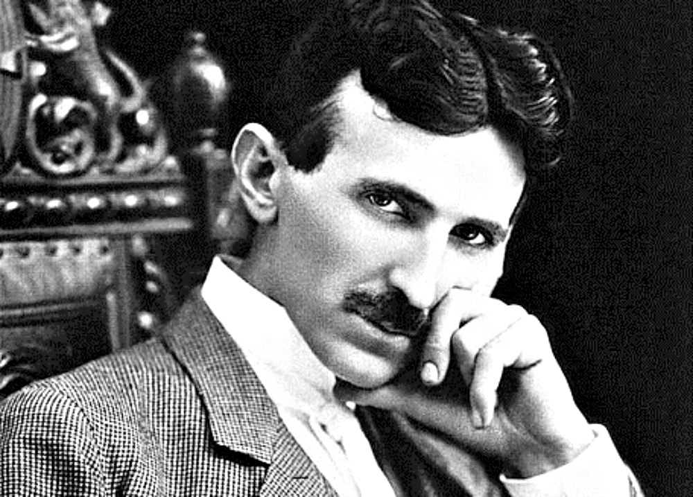

Nikola Tesla

The Man Who Invented the Twentieth Century
Nikola Tesla was a Serbian-American inventor, electrical engineer, mechanical engineer, and futurist who is best known for his contributions to the design of the modern alternating current electricity supply system.
- 1870s - Tesla received an advanced education in engineering and physics
- 1882 - worked in Paris with the Continental Edison Company.Tesla began working in what was then a brand new industry, installing indoor incandescent lighting citywide in the form of an electric power utility
- 1884 - Tesla emigrated to the United States
- 1885 - Tesla received funding for the Tesla Electric Light Company and was tasked by his investors to develop improved arc lighting. After successfully doing so, however, Tesla was forced out of the venture and for a time had to work as a manual laborer in order to survive
- 1893 - developed a steam powered reciprocating electricity generator and patented it
- 1898 - Tesla demonstrated a boat that used a coherer-based radio control—which he dubbed "telautomaton"—to the public during an electrical exhibition at Madison Square Garden.
- 1906 - Tesla demonstrated a 200 horsepower (150 kilowatts) 16,000 rpm bladeless turbine
You can read more about Nikola Tesla here